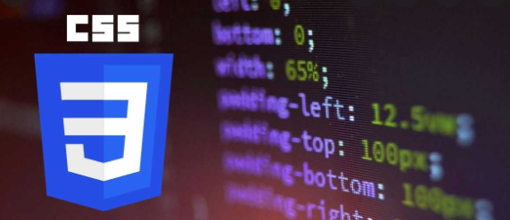

Logro dominar 4 Lenguajes de programacion los cuales son:
HTML:
El Lenguaje de Marcado de Hipertexto (HTML) es el código que se utiliza para estructurar y
desplegar una página web y sus contenidos. Por ejemplo, sus contenidos podrían ser
párrafos, una lista con viñetas, o imágenes y tablas de datos.
CSS:
CSS, en español «Hojas de estilo en cascada», es un lenguaje de
diseño gráfico para definir y crear la presentación de un documento
estructurado escrito en un lenguaje de marcado.

JAVA:
Java es un lenguaje de programación ampliamente utilizado para codificar aplicaciones
web. Ha sido una opción popular entre los desarrolladores durante más de dos décadas,
con millones de aplicaciones Java en uso en la actualidad.
PHP:
PHP es un lenguaje de programación destinado a desarrollar aplicaciones
para la web y crear páginas web, favoreciendo la conexión entre los servidores y
a interfaz de usuario. Entre los factores que hicieron que PHP se volviera tan popular,
se destaca el hecho de que es de código abierto

Volver al Inicio